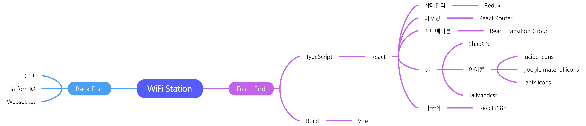

기본 정보
이름
김영환
생년월일
1997년 10월 14일
자기소개
모토
자기 소개
안녕하십니까. 저는 Java로 개발을 시작하고, 현재는 영역을 넓혀 JavaScript(TypeScript), React, DB, Python, C++, Dart등 다양한 시도를 하고 있습니다. 물론 이것들에 모두 능통한 것은 아니지만, 아직은 폭넓게 배워야할 때라고 생각해 최대한 시야를 넓혀 다양한 것을 배우고 있습니다.
자주 사용해요
- Node js(NextJS, NestJS, React)
- Docker(이미지 빌드, 컨테이너 실행, 네트워크, 볼륨 관리, 도커 파일 작성, 컴포즈)
- Git
- DB(MySQL, MariaDB, Firestore) - Prisma ORM
- Dart(Flutter)
- C, C++
- Java
- Spring boot
- Tailwindcss
- Arduino (ESP32, ESP8266) - PlatformIO
사용해봤어요
- AWS (EC2, RDS)
- Firebase
- Python(반복 작업 매크로 프로그램 제작에 사용)
- React Native
저는 이런 개발자입니다
- 기획, 설계를 매우 중요하게 생각합니다!
- 코딩을 즐겨서 다양한 플랫폼에 관심을 가지고 계속 공부하고 있습니다!
- 1인 개발로 다양한 프로젝트를 완수한 경험이 있습니다!
증명
기획, 설계를 매우 중요하게 생각
이전에 다니던 회사에서 프로젝트를 진행할 땐 1인 개발 위주의 프로젝트들을 맡아 자유도가 굉장히 높았습니다. 기술 스택이나 구현 방안등은 팀장님께 설명하면 대부분 받아들여주셨습니다. 그러나 자유도가 높은 만큼 검수는 팀장님 주도하에 엄격하게 진행됐고, 수정 사항이나 구조적 문제가 발견되었을 때 개발 경험이 극도로 저하되는 경험을 했습니다. 이후부턴 자율적으로 figma나 플로우차트, 마인드맵등을 작성한 후 팀장님과 소통을 진행한 후 작업에 착수하여 앞서 언급했던 문제점들이 많이 개선되는 효과가 있었습니다.
사용할 기술 스택을 정리해놓으니 프로젝트의 맥락이 명확해졌고, 팀장님과 소통 시 더 효율적으로 소통이 가능했습니다.

디자인 초안을 잡고 팀장님과 이야기해보면 빠진 기능을 파악하기 쉽고 디자인 요구사항을 반영하기 쉬웠습니다.
이러한 경험은 개인프로젝트에서도 유용하게 사용하고 있습니다.
전문 디자이너만큼은 아니지만 figma도 꾸준히 공부하며 사용법을 익히고, 마찬가지로 프로젝트에서도 적극적으로 사용하고 있습니다.
DB도 ERD등 문서를 적극 활용해 설계했고, 데이터 구조를 쉽게 파악할 수 있었습니다. 문서작업을 토대로 팀장님과 커뮤니케이션하고, 이 테이블은 왜 필요한지, 왜 이런 컬럼으로 구성되어 있는지, 제약 조건이 Nullable이어도 되는지 다양한 대화가 오고가며 설계의 완성도를 높일 수 있었습니다.
코딩을 즐겨서 다양한 플랫폼에 관심을 가지고 계속 공부
회사를 다니면서도 공부를 게을리하지 않았고 Java로 공부를 시작해 취업 이후 회사에서 사용하는 언어인 C, C++을 익혔습니다. 이후 새로운 프로젝트를 할 때 팀장님을 설득해 React를 사용하는 등 새로운 기술에 관심이 많고 공부하는 것을 좋아합니다. 모바일 어플리케이션 개발에도 관심이 많아 React Native(회사 프로젝트 1건 완수), Flutter(개인 프로젝트)로 다양한 프로젝트를 진행하고 있습니다.
1인 개발로 다양한 프로젝트를 완수한 경험
완수한 프로젝트, 진행중인 프로젝트 등 다양한 프로젝트를 진행하며 경험을 쌓았습니다. 시간순으로 나열해보자면 아래 프로젝트들이 있습니다.
- WearVillage (팀 프로젝트) - Spring Boot
- OX Game (1인 개발) - Spring Boot
- INTP Dev (1인 개발) - Spring Boot
- 외부인 방문 기밀 유지 서약 프로그램 (1인 개발) - React Native
- WiFi Station - React(Front), C++(Back) (1인 개발)
- Inventory Master - NextJS(Front), NestJS(Back), MariaDB(DB)(1인 개발)
- Coding with me - NextJS(Front), NestJS(Back), MariaDB(DB)(1인 개발, 진행 중)
- Choose one - Flutter (1인 개발, 진행 중)
- Remember - Flutter (1인 개발, 진행 중)
위 프로젝트에 대한 간단한 소개는 프로젝트 섹션에서 확인할 수 있습니다.
수상 이력 & 자격증
캡스톤 디자인 대회 동상
울산 과학 대학교
정보처리산업기사
한국산업인력공단
SQL 개발자 (SQLD)
한국데이터산업진흥원
프로젝트
WearVillage
팀 프로젝트주요 기술 스택
Java, Spring Boot, WebSocket, MySQL, AWS EC2, AWS RDS, JavaScript, HTML5, CSS3
핵심 사안
이 프로젝트는 중고 옷을 구매하거나 빌려입을 수 있는 웹 플랫폼으로, 옷을 대여할 수 있다는 독특한 컨셉의 아이디어를 구현한 사이트입니다. 제 아이디어가 채택되어 팀장을 맡아 진행하게 되었습니다. 웹소켓을 통해 실시간 채팅 기능을 구현하고, EC2 인스턴스를 대여하고 가비아에서 도메인을 구매해 실제 웹사이트 배포까지 진행된 프로젝트입니다.
프로젝트 설명
OX Game
1인 개발주요 기술 스택
Java, Spring Boot, WebSocket, React, AWS EC2, JavaScript, HTML5, CSS3
핵심 사안
대학 과제로 진행한 프로젝트로, 웹소켓을 응용해 실시간 채팅 및 게임을 구현했습니다. 간단한 OX 게임으로, 사용자들이 마우스 커서를 클릭한 것을 웹소켓으로 공유해 OX 게임을 진행하는 미니게임입니다. 프로젝트 설명의 스크린샷은, 실제 과제 발표 현장에서 사용자 10명 이상이 참여한 모습을 담은 스크린샷입니다.
프로젝트 설명
INTP Dev
1인 개발주요 기술 스택
Spring Boot, Thymeleaf, MySQL, AWS EC2, AWS RDS, JavaScript, HTML5, CSS3, WebSocket
핵심 사안
개인 블로그 운영 목적으로 진행한 프로젝트입니다. 6개월 이상 운영되었지만 현재는 비용 문제로 호스팅을 중단했습니다.
프로젝트 설명
외부인 방문 기밀 유지 서약 프로그램
1인 개발주요 기술 스택
React Native, WebView, HTML5, CSS3, JavaScript
핵심 사안
회사 외부인 방문시 기밀 유지 서약을 진행하는 프로그램입니다. 이는 사내에서만 사용한 프로그램이므로 기록이 따로 없어 간략하게 서술했습니다.
WiFi Station
1인 개발주요 기술 스택
C++, Arduino, ESP8266, React, Tailwindcss, JavaScript, HTML5, CSS3, Git
핵심 사안
WiFi 모듈을 활용해 와이파이 네트워크를 구축하고, React를 활용해 웹 페이지를 구현한 프로젝트입니다. Front에서 ESP8266 모듈에 내재된 웹서버에 요청을 보내 서보를 조작하는 IOT 프로젝트입니다.
프로젝트 설명
Inventory Master
1인 개발주요 기술 스택
NextJS, NestJS, MariaDB, Tailwindcss, JavaScript(TypeScript), HTML5, CSS3, Prisma, Docker, Git
핵심 사안
자유도가 매우 높았던 프로젝트인만큼 회사 프로젝트인데도 불구하고 원하는 기술 스택과 디자인을 적극 반영할 수 있었습니다. NextJS로 프론트를, NestJS로 백엔드를, DB는 PrismaORM를 통해 MariaDB를 사용했습니다.
프로젝트 설명
Remember
1인 개발주요 기술 스택
Flutter, Firebase, Riverpod(상태관리 라이브러리)
핵심 사안
Remember는 인스타나 쓰레드처럼 피드 기능을 적극적으로 활용한 트렌드한 다이어리 앱입니다. 카테고리를 세분화하고 점수를 슬라이드를 통해 직관적으로 입력할 수 있는 앱입니다. 현재 와이어프레임을 작성하며 차차 진행 중입니다.
프로젝트 설명
Choose one
1인 개발주요 기술 스택
Flutter, Firebase, Riverpod(상태관리 라이브러리)
핵심 사안
Choose One은 Flutter와 Firebase를 익히는 데에 목적을 둔 간단한 개인 프로젝트입니다. 이상형 월드컵을 소재로 디자인이나 DB 설계를 진행하고 있습니다.
프로젝트 설명
Coding with me
1인 개발주요 기술 스택
NestJS, NextJS, Tailwindcss, JavaScript(TypeScript)
핵심 사안
Coding with me는 개인 프로젝트로, 친구와 함께 코딩 테스트를 풀어볼 수 있는 프로젝트입니다. 개인적으로 친구들과 사용하려고 만들고 있습니다. 웹소켓을 활용해 코드 타이핑 내용과 스크린샷을 공유합니다.
프로젝트 설명
Contact
dnfwlq123@naver.com
GitHub
github.com/KimYoungHwan8750